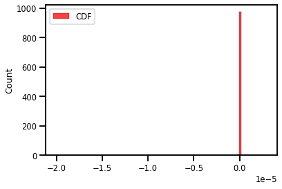
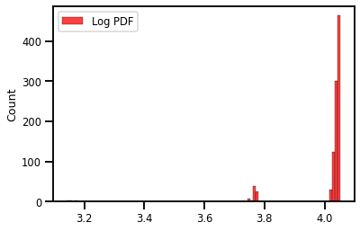

Univariate Gaussianization¶
#@title Install Packages
try:
import sys, os
from pyprojroot import here
# spyder up to find the root
root = here(project_files=[".here", "setup.py"])
# append to path
sys.path.append(str(root))
except ModuleNotFoundError:
import os
os.system("pip install objax chex")
os.system("pip install git+https://github.com/IPL-UV/rbig_jax.git#egg=rbig_jax")
# jax packages
import jax
import jax.numpy as jnp
from jax.config import config
import chex
config.update("jax_enable_x64", False)
import numpy as np
from functools import partial
# library parameters
from rbig_jax.data import get_classic
from rbig_jax.plots import plot_info_loss, plot_joint, plot_joint_prob
# logging
import tqdm
import wandb
# plot methods
import matplotlib.pyplot as plt
import seaborn as sns
sns.reset_defaults()
sns.set_context(context="talk", font_scale=0.7)
%matplotlib inline
%load_ext autoreload
%autoreload 2
The autoreload extension is already loaded. To reload it, use:
%reload_ext autoreload
# get data
n_samples = 1_000
n_features = 1
data = get_classic(n_samples)[:, 1]
Initialization¶
First we need to initialize our RBIG method with some parameters. For example, which marginal gaussianization method, what precision do we want, and what rotation method do we want.
method- the method used to marginally transform the data. We have histogram or kde currently implementedsupport_extension- this is the amount we want to extend the support for our marginal distributions. Higher values indicate higherprecision- we use interpolation because it is much faster. So the CDF, PDF and PPF are interpolation schemes. This value will allow one to have more “precision” for the estimated quantities but it will be slower.
X = jnp.array(data, dtype=jnp.float32)
sns.distplot(X, bins=100)
WARNING:absl:No GPU/TPU found, falling back to CPU. (Set TF_CPP_MIN_LOG_LEVEL=0 and rerun for more info.)
/home/emmanuel/.conda/envs/jax_py38/lib/python3.8/site-packages/seaborn/distributions.py:2557: FutureWarning: `distplot` is a deprecated function and will be removed in a future version. Please adapt your code to use either `displot` (a figure-level function with similar flexibility) or `histplot` (an axes-level function for histograms).
warnings.warn(msg, FutureWarning)
<AxesSubplot:ylabel='Density'>
Histogram Transformation¶
from rbig_jax.transforms.histogram import InitUniHistUniformize
from rbig_jax.transforms.kde import InitKDEUniformize
support_extension = 10
alpha = 1e-5
precision = 100
nbins = int(jnp.sqrt(X.shape[0]))
# initialize histogram transformation
init_transform_func, forward_f, grad_f, inverse_f = InitUniHistUniformize(
n_samples=X.shape[0],
nbins=nbins,
support_extension=support_extension,
precision=precision,
alpha=alpha
)
X_u, params = init_transform_func(X)
X_u, X_ldj_u = grad_f(params, X)
sns.displot(X_u, bins=100)
<seaborn.axisgrid.FacetGrid at 0x7ff5f019fb80>
Training¶
import jax.numpy as jnp
from jax import scipy
def log_prob(params, inputs):
y, log_det = grad_f(params, inputs)
# uniform nothing
latent_prob = scipy.stats.norm.logpdf(y)
# log probability
log_prob = latent_prob.sum(axis=1) + log_det.sum(axis=1)
return log_prob
x_lprob = log_prob(params, X[:, None])
x_lprob.min(), x_lprob.max()
(DeviceArray(-5.494256, dtype=float32), DeviceArray(-1.240401, dtype=float32))
def nll_loss(params, inputs):
# negative log-likelihood
return - log_prob(params, inputs).mean()
from jax.experimental import optimizers
lr = 0.01
epochs = 1_000
batch_size = 128
opt_init, opt_update, get_params = optimizers.adam(step_size=lr)
opt_state = opt_init(params)
X = np.array(data)
loss, grads_params = jax.value_and_grad(nll_loss)(params, X[:, None])
def step(i, opt_state, inputs):
# get the parameters from the state
params = get_params(opt_state)
# calculate the loss AND the gradients
loss, gradients = jax.value_and_grad(nll_loss)(params, inputs)
# return loss AND new opt_state
return loss, opt_update(i, gradients, opt_state)
# TO MAKE IT FAST
train_op = jax.jit(step)
import itertools
from jax import device_put
import tqdm
from jax import random
# initialize parameters
key = random.PRNGKey(123)
itercount = itertools.count()
permute_rng, rng = random.split(key)
train_data = jnp.array(X[:, None])
losses = list()
pbar = tqdm.trange(epochs)
with pbar:
for i in pbar:
# batch processing
permute_rng, rng = random.split(rng)
# randomly shuffle the data
train_data = random.permutation(permute_rng, train_data)
# Train
avg_loss = []
for batch_index in range(0, n_samples, batch_size):
# compute loss
loss, opt_state = train_op(
next(itercount),
opt_state,
train_data[batch_index:batch_index+batch_size],
)
# append batch
avg_loss.append(float(loss))
# average loss
batch_loss = np.mean(np.stack(avg_loss))
# Log losses
losses.append(batch_loss)
pbar.set_postfix({"loss": f"{batch_loss:.4f}"})
100%|██████████| 1000/1000 [00:18<00:00, 54.12it/s, loss=-3.0967]
Results¶
final_params = get_params(opt_state)
final_params
UniHistParams(support=DeviceArray([-1.7694528 , -1.732982 , -1.6965114 , -1.6600407 ,
-1.62357 , -1.5870993 , -1.5506285 , -1.5141578 ,
-2.20476 , -0.92814463, -1.3281149 , -1.3842522 ,
-1.3142335 , -1.2073436 , -1.212238 , -1.6432213 ,
-0.362998 , -1.2489077 , -0.92500967, -0.9230497 ,
-0.9336326 , -0.9401366 , -1.288557 , -0.564726 ,
-0.7798617 , -0.8232971 , -0.90156883, -1.053929 ,
-1.3332595 , -0.20821959, -0.7079279 , -0.0373549 ,
-0.5057336 , -0.45858175, -0.614836 , -0.59847283,
-0.45703244, -0.33811468, -0.34769243, -0.7913197 ,
0.1779279 , 0.2211994 , -0.21841908, -0.06568412,
-0.0137197 , 0.05314906, 0.14457457, 0.10024901,
0.2025156 , 0.27438068, 0.22569482, 0.26955196,
0.38486987, 0.4396419 , 0.48353386, 0.49624297,
0.56712013, 0.6033712 , 0.61567795, 0.77930987,
0.8098997 , 0.7930079 , 0.91259646, 1.011691 ,
0.9825141 , 1.0120894 , 1.1494701 , 1.1867115 ,
1.1505579 , 1.0814533 , 1.5402635 , 1.6135404 ,
1.245152 , 1.2253889 , 1.4930236 , 1.6019309 ,
1.3058952 , 1.4876353 , 1.5544504 , 1.3800573 ,
1.3531739 , 1.508906 , 1.551678 , 1.4998031 ,
1.5173963 , 1.501438 , 1.3262033 , 1.5684309 ,
1.7079377 , 1.3893788 , 1.5763917 , 1.6857544 ,
1.5858518 , 1.6223226 , 1.6587933 , 1.6952641 ,
1.7317348 , 1.7682053 , 1.804676 , 1.8411468 ], dtype=float32), quantiles=DeviceArray([ 0.0000000e+00, 1.2121235e-04, 2.4242431e-04,
3.6363627e-04, 4.8484863e-04, 6.0606061e-04,
7.2727294e-04, 8.4848527e-04, -5.9852471e-05,
3.1540887e-05, 5.8432738e-03, 1.6146677e-02,
3.6252032e-03, -7.7855024e-03, -4.5684122e-02,
5.0956191e-06, -3.9749815e-05, -1.8881966e-04,
1.0705611e-03, 2.2342401e-02, -1.0164994e-02,
9.6105756e-03, -1.5450810e-07, -4.8903743e-08,
2.7166026e-02, 3.1155362e-03, -5.3736452e-02,
-3.6648553e-02, 4.1607173e-10, -1.3590011e-09,
-5.6044809e-03, -5.1474064e-03, -5.9495624e-02,
-5.1688928e-02, -2.3789277e-02, -2.4969686e-02,
-8.8339398e-11, -1.0346310e-09, 1.9699079e-01,
2.5042612e-10, -3.5325631e-12, 1.2146651e-01,
5.2207694e-34, -1.0880569e-34, -2.2467003e-35,
-4.4941629e-35, 8.3607862e-35, 1.6912939e-34,
-5.3665036e-35, 6.6761237e-34, -2.4720107e-35,
-7.4622712e-36, 9.7658211e-36, 1.4968833e-35,
-2.8959595e-35, 1.2859925e-35, 2.5050643e-35,
-4.3841081e-35, -6.5713607e-36, 8.6533618e-36,
-3.1479940e-35, 4.3372326e-36, -1.6612219e-35,
6.6643398e-36, 5.2605461e-02, 1.5872824e-35,
-4.4833400e-36, 9.1004096e-02, 2.1029365e-01,
-2.5507711e-35, 2.0953353e-35, 1.9377682e-01,
3.9235494e-01, 3.4854871e-01, 2.1938431e-01,
3.2172069e-01, 5.1776391e-01, 3.7557328e-01,
5.3881997e-01, 6.4608049e-01, 6.9455069e-01,
6.1516923e-01, 6.8579489e-01, 7.7560055e-01,
7.2787035e-01, 7.7712137e-01, 6.7976034e-01,
2.4232097e-01, 8.0251986e-01, 9.0359235e-01,
8.1745851e-01, 9.0158272e-01, 9.9915171e-01,
9.9927288e-01, 9.9939412e-01, 9.9951530e-01,
9.9963647e-01, 9.9975765e-01, 9.9987882e-01,
1.0000000e+00], dtype=float32), support_pdf=DeviceArray([ -1.5864285 , -1.5351337 , -1.5577754 , -9.601633 ,
-1.1912078 , 0.40864375, -1.1585839 , -1.3616871 ,
-1.1674522 , -0.31719974, -0.77795273, -0.44304025,
-7.434033 , -0.9180711 , 28.500772 , -0.215671 ,
-0.33772996, -0.40154406, -0.5941033 , -0.3362054 ,
0.5940793 , 0.29812947, 0.3099083 , 0.31256223,
-29.627684 , 0.7359435 , 18.140686 , 1.5066144 ,
1.5631777 , 1.623201 , 1.6126827 , 1.61597 ,
1.6547871 ], dtype=float32), empirical_pdf=DeviceArray([ 0.0689551 , 0.13375829, 0.25684646, 2.57936 ,
23.84377 , 0.27389443, 0.23914732, 0.48236546,
0.73420435, 0.32306463, 0.60951656, 0.51302636,
2.5418441 , 43.73604 , 5.2577524 , 0.36909613,
0.6400705 , 0.9293431 , 1.4170147 , 1.8320564 ,
0.9941384 , 0.9802866 , 1.1345078 , 1.220912 ,
8.064542 , 57.594555 , 18.959385 , 0.7734003 ,
0.7460296 , 0.4707904 , 0.26318252, 0.17458041,
0.0647255 ], dtype=float32))
CDF¶
X_trans, X_ldj = grad_f(final_params, X[:, None])
fig, ax = plt.subplots()
sns.histplot(X_trans.squeeze(), bins=100, label="CDF", fill=True, ax=ax, color='red')
ax.legend()
plt.show()

Log PDF¶
fig, ax = plt.subplots()
sns.histplot(X_ldj.squeeze(), bins=100, label="Log PDF", fill=True, ax=ax, color='red')
ax.legend()
plt.show()

2D Example¶
# get data
n_samples = 1_000
n_features = 1
data = get_classic(n_samples)
# plot data
plot_joint(data, "blue", "Original Data", kind='kde', logger=False)
<Figure size 432x288 with 0 Axes>
Model¶
from chex import Array, dataclass
@dataclass
class RQSplineParams:
x_pos : Array
y_pos : Array
knot_slopes : Array
range_min = -10.0
range_max = 10.0
boundary_slopes = "identity"
n_bins = 20
n_features = 2
rsq_params = jnp.zeros((n_features, 3 * n_bins + 1))
# init model
rqs_clf = RationalQuadraticSpline(rsq_params, range_min, range_max, boundary_slopes)
# init params
params = RQSplineParams(x_pos=rqs_clf.x_pos, y_pos=rqs_clf.y_pos, knot_slopes=rqs_clf.knot_slopes)
Training¶
opt_init, opt_update, get_params = optimizers.adam(step_size=lr)
opt_state = opt_init(params)
# initialize parameters
key = random.PRNGKey(123)
itercount = itertools.count()
permute_rng, rng = random.split(key)
train_data = jnp.array(data, jnp.float32)
losses = list()
pbar = tqdm.trange(epochs)
with pbar:
for i in pbar:
# batch processing
permute_rng, rng = random.split(rng)
# randomly shuffle the data
train_data = random.permutation(permute_rng, train_data)
# Train
avg_loss = []
for batch_index in range(0, n_samples, batch_size):
# compute loss
loss, opt_state = train_op(
next(itercount),
opt_state,
train_data[batch_index:batch_index+batch_size],
)
# append batch
avg_loss.append(float(loss))
# average loss
batch_loss = np.mean(np.stack(avg_loss))
# Log losses
losses.append(batch_loss)
pbar.set_postfix({"loss": f"{batch_loss:.4f}"})
100%|██████████| 100/100 [00:05<00:00, 19.58it/s, loss=2.1271]